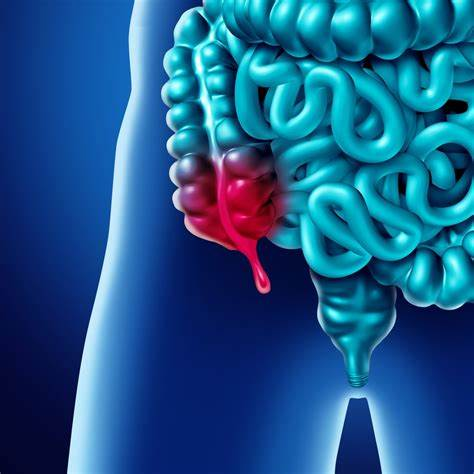
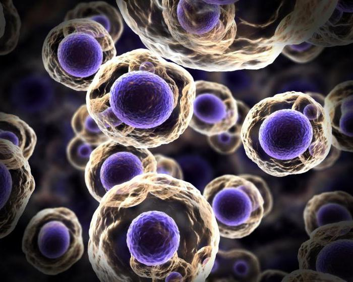
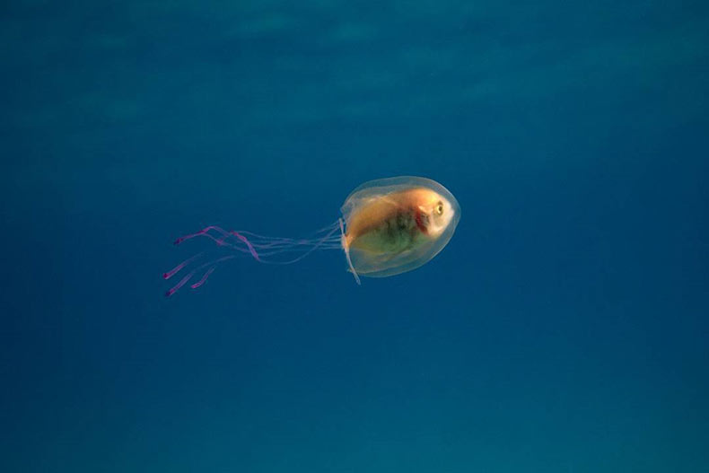
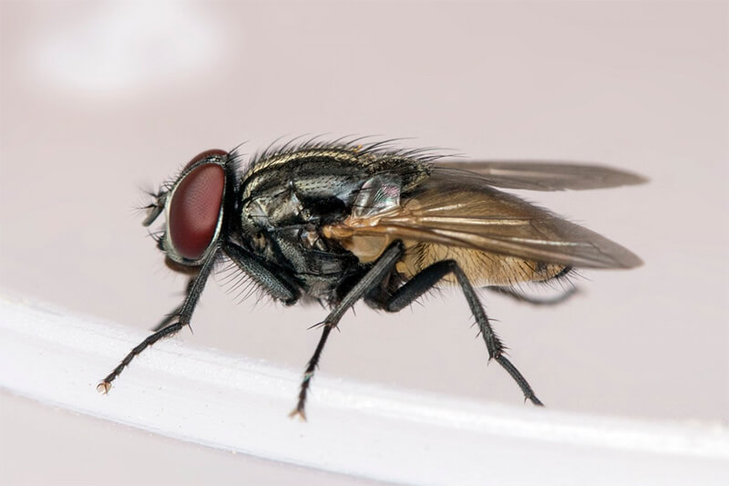

En este apartado vas a encontrar diferentes datos interesantes y
llamativos sobre biologia

Una parte de nuestro cuerpo no está demasiado claro para qué sirve
Se llama apéndice y se encuentra en el inicio de nuestro intestino
grueso (abajo y a la derecha mirándonos en el espejo). Todos
conocemos a gente operada de apendicitis y todos hacen vida
normal. Pero entonces, si no nos es útil, ¿por qué está allí?
¿Resto evolutivo o función incógnita?

Nuestras células son caníbales
Algunas siguen en la actualidad comiéndose a otras como hacen los
macrófagos, pero todas tienen un esqueleto en el armario. Parece
que las células eucariotas las nuestras Hoy estas células
deglutidas se llaman mitocondrias y nos sirven para obtener
energía. Algunas otras células quizá se comieron a otros pequeños
seres flagelados (con colita) y dieron lugar a nuestras células
ciliadas. Todo esto lo decía Lynn Margulis, y todo es posible.

Podemos aprovecharnos de las estrategias de otros animales para
hacer nuestra vida más cómoda
Hay un pez al que le gusta vivir entre las medusas y ha
desarrollado una protección que lo hace insensible a sus
picaduras. Pues las primeras pomadas con este compuesto ya
empiezan a aplicarse en humanos para poder bañarse tranquilamente.
Turistas metamorfoseados

Las moscas tienen el gusto en los talones
Las moscas tienen papilas gustativas en sus patas en lugar de en
la boca como los humanos u otras criaturas. Una mosca común puede
tener alrededor de 15,000 papilas gustativas distribuidas en sus
seis patas, lo que les permite explorar y evaluar su entorno en
busca de alimentos comestibles.